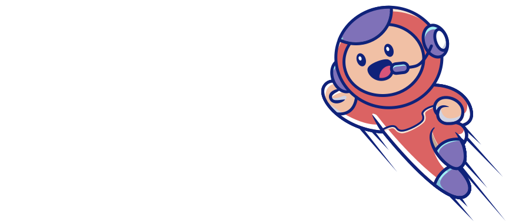

Bot
Modes
- 1. Cria um sistema de verificação capcha para novos membros garantirem que não são robôs.
- 2. Possui um sistema de banimento automático para links suspeitos que forem enviados na comunidade.
- 3. Sistema de avisos e banimento manual, para pessoas administradoras utilizarem.